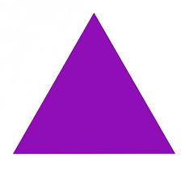

Зимой и летом, независимо от капризов погоды, люди - «Треугольники» облачены в желтую майку лидера. Это настоящие «Энерджайзеры», только в отличие от батареек, обладают честолюбием и прагматизмом. Они расчетливы, амбициозны, не только знают, чего хотят, но и как этого добиться. На работе умеют весьма доходчиво убеждать руководство в собственной незаменимости. «Треугольники» частенько грешат тем, что уверены в существовании двух точек зрения — неправильной и их собственной. Они - сильные личности и опасные конкуренты, иногда кажется, что вместе с кровью по их жилам струится дух соперничества.
